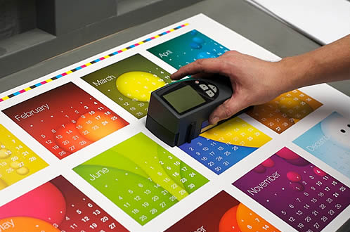

Přestože pojmy jako marketing a public relations jsou spojovány s moderním přístupem k podnikání, stále se Vaše firma neobejde bez tradičních forem komunikace se zákazníky či s veřejností obecně. Základním kamenem jsou a i v budoucnu budou tiskoviny jako reklamní plakáty, brožurky, katalogy produktů, akční nabídky a mnohé další. A samozřejmě nelze opomenout nezastupitelnou úlohu vizitek. Veškeré tiskoviny charakterizují Vaši firmu. Zachování jednotné vizuální linie firemní identity usnadní spojení reklamního sdělení použitých tiskovin s Vaší společností.
Rádi pro Vás vytvoříme účinný grafický návrh tiskovin, ten následně vytiskneme a výsledné dílo dodáme až na Váš stůl.
Provádíme veškerý možný tisk. Kolikrát stačí jen pomyslet a tisky se hrnou ze stroje. Tiskneme vizitky, letáky, firemní tiskoviny, PF, pozvánky, samolepky, časopisy, katalogy, manuály, firemní kalendáře, výroční zprávy, obálky, brožury, plakáty a další sortiment
vizitka se stala nedílnou součástí našeho života a i přes rozsáhlé využívání moderních prostředků má stále své opodstatněné využití.
Velikost vizitky podléhá v různých zemích místním zvyklostem. Bývá to zpravidla 5 x 9 cm, ale také 6 x 9 cm, 5,5 x 9,5 cm nebo 4,5 x 8,5 cm. Vizitky používané ve Velké Británii a skandinávských zemích mívají obvykle formát menší (4 x 7,5 cm). My vyrábíme u nás zcela nejrozšířenější velikost 5 x 9 cm.
Firemní vizitky
Tento druh vizitek představuje dotyčnou osobu jako zaměstnance nebo představitele určité firmy či instituce.
Vedle údajů o osobě (jméno a příjmení) obsahují tyto vizitky vždy označení instituce, její adresu, telefonní číslo, číslo faxu, e-mailovou adresu, webové stránky firmy, někdy i mobilní telefon.
Název firmy by měl odpovídat označení v podnikovém rejstříku.
U jména musí být vždy uvedena funkce či pracovní zařazení. Čím vyšší funkce v hierarchii úřadu, firmy či instituce, tím méně údajů (jako je fax, telefon) vizitka obsahuje. Na těchto vizitkách se nikdy neuvádí soukromé údaje, jako bydliště, telefon domů atd. Číslo mobilního telefonu na svých vizitkách mívají pouze prodejci, zubní lékaři, advokáti či daňoví poradci apod. Je v jejich zájmu či v zájmu jejich firmy být kdykoliv ve styku se zákazníkem či klientem.
Základní pravidlo
Pro správnou vizitku platí základní známé pravidlo, že méně znamená více.
Nesnažte se proto za každou cenu na Vaši vizitku dostat všechny údaje o Vás a Vašich produktech, případně službách.
Vizitka není reklamní leták!
Vizitka by měla být přehledně uspořádaným kontaktem na Vaši osobu.
Pokud máte logo, s nímž jste spokojeni, měli byste mít také dořešen celý vizuální styl (firmy / organizace / produktu). To znamená, že v souladu s logem či grafickou značkou (s jeho tvary, barvami, typografií…) byste měli používat jednotný styl všeho, čím promlouváte ke svým cílovým skupinám / zákazníkům. To platí nejen o vizitkách ale též o firemních tiskovinách, webu, propagačních předměrech, firemních automobilech, interiérech, navigačních systémech, pracovních oděvech, atd. Finanční náklady, které jsou spojeny s vytvořením jednotného vizuálního stylu, sice nejsou zanedbatelné, ale mnohonásobně se vám vrátí.
Letáky jsou jednoduché a finančně nenáročné propagační dokumenty. Jedná se o jednoúčelovou tiskovinu s krátkodobou účinností jeho sdělení. Zpravidla upozorňuje na aktuální výhodné nabídky produktů a služeb. Pro zvýšení efektivity reklamního sdělení je nutno co nejpřesněji určit zájmovou skupinu a spádovou oblast v níž mají být reklamní letáky distribuovány. K tomuto účelu můžete využít našich poradenských služeb.
Pořádáte kulturní, sportovní či společenskou akci, firemní prezentaci nebo přednášku? Chcete oslovit adresně vybrané osobnosti, obchodní partnery a přitom mít jistotu, že Váš e-mail s pozváním nezapadne mezi stovkou dalších e-mailů a spamů? Nejlepší cestou je tištěná pozvánka. Nejenže vkusné designové vyhotovení upoutá pozornost a zajistí, že jeho obsah nezapadne v zapomenutí, ale rovněž ukáže Vašim partnerům, že je neodbýváte jedním hromadným e-mailem z povinnosti, ale že si jich vážíte.
S grafickým návrhem Vám rádi pomůžeme. Pozvánky tiskneme na kvalitní papír, který podtrhne jejich vysokou úroveň.